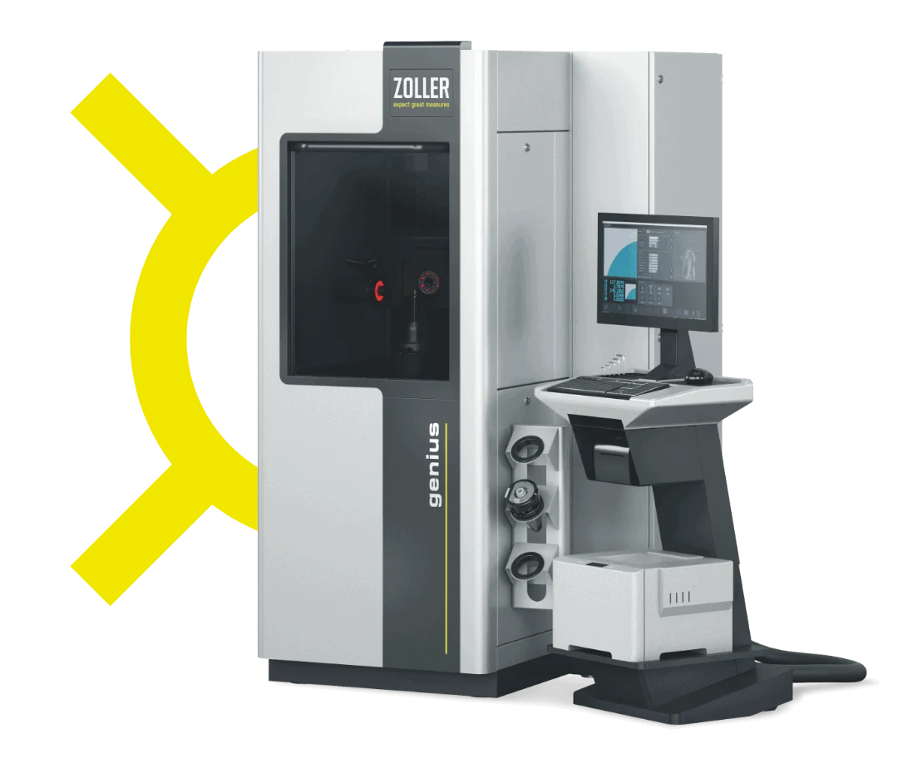
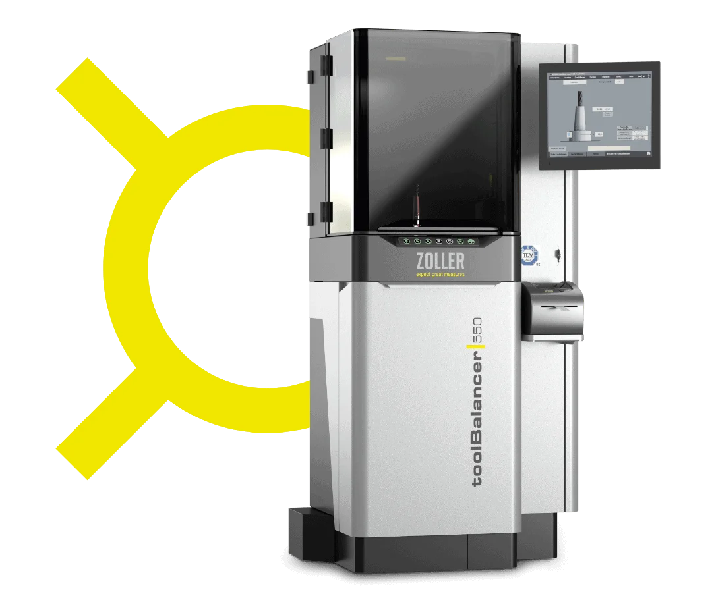

Présentation de ZOLLER : notre expertise
Nous vous accompagnons dans votre travail
Grâce à nos produits, nos machines et nos logiciels, nous vous aidons à accélérer vos processus et à réduire vos rebuts.
Nous développons des solutions sur mesure pour répondre à vos défis. Découvrez ici les possibilités que vous offrent nos logiciels et nos équipements.
Réglage et mesure
Réduire les coûts et renforcer la sécurité grâce au préréglage des outils
Pour usiner des pièces avec précision, les machines-outils CNC modernes ont besoin de données géométriques exactes sur les outils. Grâce au système de préréglage d'outils, vous déterminez les données d'outils en dehors de la machine et gagnez ainsi un temps considérable lors du réglage. Dès la mise en place de l'outil, vous pouvez immédiatement lire les données de l'outil à partir du dispositif de préréglage. Le transfert des données vers la machine s'effectue par voie électronique et est donc totalement exempt d'erreurs, car les fautes de frappe et les erreurs de transmission sont exclues.
En savoir plus sur les appareils de réglage et de mesure pour le préréglage des outils

Gestion des outils
De bonnes raisons de produire de manière plus rentable, de façon mesurable
- Réduire les temps de préparation : l'outil adéquat se trouve toujours au bon endroit au bon moment. La transmission des données adaptée au système de commande évite les erreurs de saisie sur la machine et les coûts qui en découlent.
- Trouver au lieu de chercher : vous savez toujours quels outils sont disponibles pour quelles machines et où ils se
trouvent. - Mieux s'organiser : des processus planifiés, avec des temps unitaires prévisibles et un contrôle efficace, garantissent une gestion optimale des processus et donc des temps de réaction courts. Des unités de production autonomes peuvent être intégrées et organisées.
- Éviter les temps d’arrêt des machines : tous les outils sont toujours disponibles, 24 heures sur 24. L’utilisation des outils appropriés sur les machines permet d’éviter les collisions et les casses d’outils.
- Garantir la qualité : une disponibilité élevée du système et des processus de fabrication transparents et stables garantissent une qualité optimale.
- Réduire les coûts de stockage : vous voyez quels outils sont utilisés et à quelle fréquence, et vous ne commandez que ce dont vous avez réellement besoin.
- Exploiter pleinement le potentiel des outils : des vitesses de coupe et des avances optimales augmentent la durée de vie des outils.
- Augmenter la productivité : une rotation optimisée des outils garantit des délais d’exécution courts et une utilisation optimale des machines ; la productivité augmente et les coûts de fabrication diminuent.
Gestion économique des outils, gestion
efficace des stocks et gestion des données de fabrication

Transfert de données
Transfert de données plus sûr et plus rapide
L'échange de données entre les différents éléments de production est indispensable à la fabrication industrielle moderne. Les solutions logicielles de ZOLLER garantissent à tout moment un transfert rapide et fiable des données d'outils, quel que soit le fabricant ou la plateforme.
Transmission des données d'outils : une gestion
parfaite des outils et une organisation optimale de la production

Contrôle et mesure
Les machines de mesure garantissent une fabrication précise
Pour que les outils remplissent exactement la fonction pour laquelle ils ont été conçus et fabriqués, ils doivent eux-mêmes être fabriqués avec précision. Nos machines de mesure universelles permettent de mesurer les outils au micromètre près et de vérifier s'ils répondent aux exigences.

Automatisation
Solution d'automatisation pour la mesure des outils
Que ce soit dans l'atelier d'affûtage des outils ou lors de la préparation, de la mise à disposition et du réglage des outils, l'automatisation des tâches quotidiennes sera la réponse à ce défi. Pour chaque tâche, ZOLLER propose la solution adaptée à la manutention automatisée des outils. En fonction des besoins, la solution peut prendre la forme d’un système fermé avec des modules supplémentaires, d’un concept d’automatisation complexe ou d’une assistance robotique collaborative dans l’atelier d’outillage.
Tout savoir sur l'automatisation modulaire pour les outils d'usinage

technique de rétraction
Temps de préparation réduits grâce à l'utilisation d'un appareil de rétraction
Pour de nombreux outils de perçage et de fraisage, le serrage par contraction est la méthode la plus rapide et, en même temps, la plus précise pour fixer l'outil. Une station de rétraction adaptée permet d'effectuer facilement les étapes nécessaires ; une machine de rétraction peut en outre automatiser en grande partie ces opérations tout en garantissant la fiabilité du processus grâce à des mesures appropriées.

Technique d'équilibrage
Équilibrer les meules et les outils ? C'est important et facile !
Pour les machines d'usinage modernes, il est extrêmement important de disposer d'outils équilibrés avec précision. Les déséquilibres au niveau des meules, des outils et des systèmes d'outillage entraînent une usure, voire des dommages au niveau de la broche et des moteurs, mais aussi, et surtout, des rebuts parmi les pièces usinées. Un équilibrage régulier évite les temps d'arrêt, garantit la qualité et réduit globalement vos coûts.
Notre système d’équilibrage prolonge la durée de vie des outils. Un fonctionnement
plus silencieux et de meilleures performances d’usinage grâce à des meules équilibrées.

Optimiser la durée de vie de vos outils
Plus la durée de vie d'un outil d'usinage est longue, plus son coût est faible et plus il peut fonctionner efficacement. Si vous connaissez les principaux facteurs qui influencent la durée de vie, il est plus facile de l'optimiser.
Comment contrôler et optimiser la durée de vie de votre outil
Optimiser le temps de préparation :
comment et pourquoi ?
De nos jours, pratiquement aucune machine ni aucune installation ne fabrique un seul et même produit : en règle générale, elles sont reconfigurées en fonction des besoins pour fabriquer différents produits. Il en résulte des temps de changement de production pendant lesquels la machine ne produit généralement rien.